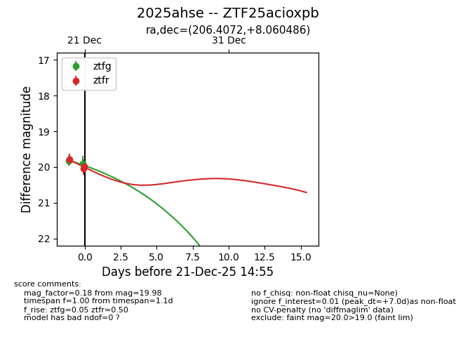
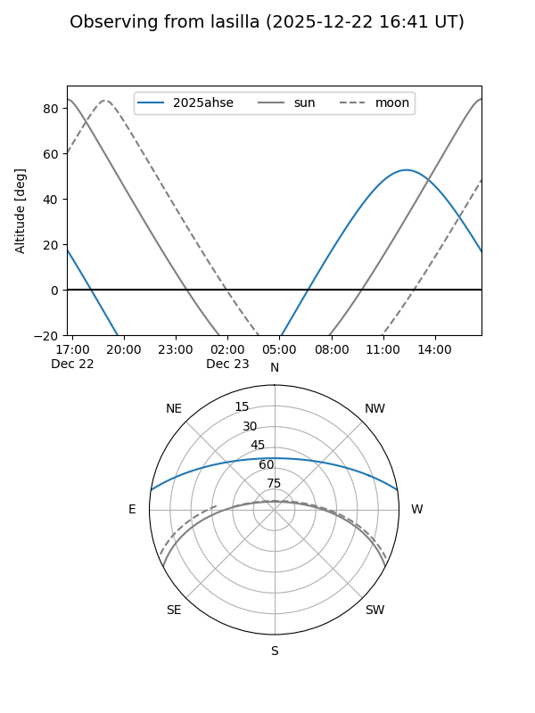
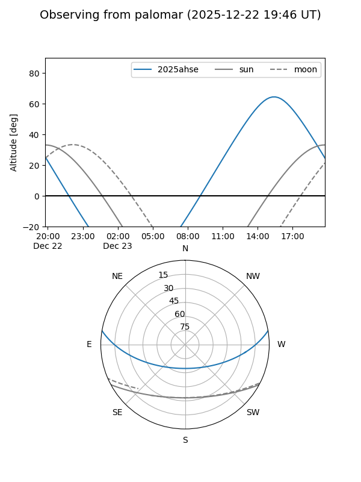
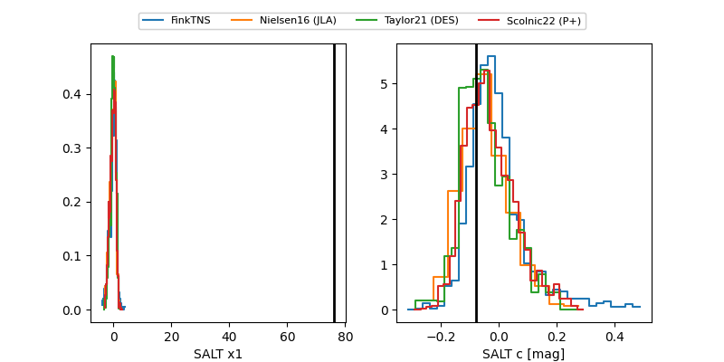

2025ahse
Target 2025ahse at 2025-12-22 14:36
Aliases and brokers:
FINK: fink-portal.org/ZTF25acioxpb
Lasair: lasair-ztf.lsst.ac.uk/objects/ZTF25acioxpb
ALeRCE: alerce.online/object/ZTF25acioxpb
TNS: wis-tns.org/object/2025ahse
YSE: ziggy.ucolick.org/yse/transient_detail/2025ahse
alt names
ZTF25acioxpb (ztf,fink_ztf)
2025ahse (tns,yse)
Coordinates:
equatorial (ra, dec) = 206.4072,+8.06049
equatorial (HMS+DMS) = 13:45:37.72,+08:03:37.75
galactic (l, b) = (339.3731,+67.01598)
Flags:
Photometry:
last ztfg=19.90, ztfr=19.98
2 ztfg, 3 ztfr detections
Lightcurve

Visibility


Additional plots
